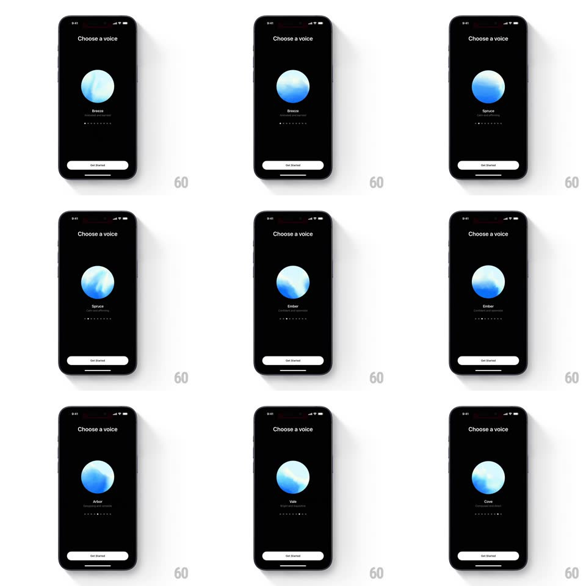

Media
Frame-by-frame

Rebuild this interaction 1:1: ChatGPT's "Choose a voice" picker - a big fluid orb sits center-screen, and swiping horizontally cycles through voices (Breeze, Spruce, Ember, Juniper, Maple, Cove), the orb morphing its internal flow as each voice plays a preview, with the name and tagline swapping under it and page dots tracking position.

Rebuild this interaction 1:1: ChatGPT's "Choose a voice" picker - a big fluid orb sits center-screen, and swiping horizontally cycles through voices (Breeze, Spruce, Ember, Juniper, Maple, Cove), the orb morphing its internal flow as each voice plays a preview, with the name and tagline swapping under it and page dots tracking position. ## Integration Integration: stack-agnostic spec - springs given as stiffness/damping, timed motions as duration + curve; map every value to your framework and animation library of choice. ## Scene Black screen: "Choose a voice" title, a large spherical orb (blue-white fluid gradient), voice name + descriptor line, a row of page dots, and a white "Get Started" button at the bottom. ## Motion spec Pattern: horizontal swipe carousel with a morphing audio orb. - Swipe: the orb translates with the finger (1:1), the next voice's orb entering from the side; release snaps (spring ~380/26, 300ms). - On settle, the voice preview plays and the orb reacts: internal fluid patterns swirl and pulse with the audio amplitude (brightness +/-20%, swirl speed keyed to loudness). - Name and tagline crossfade (200ms) as the orb passes center; page dots update, the active dot brightening. - Idle: the orb breathes slowly (scale 1 -> 1.03 -> 1, 3s) with gentle internal drift. - Each voice's orb has its own tint bias (some cooler, some warmer) that tweens during the swipe. ## Calibration - The orb is the only visual - no avatars, no waveforms; all personality comes from its flow. - Audio reactivity is amplitude-driven, not a fixed loop. ## Reduced motion Swipe snaps without orb travel (crossfade); orb holds a static gradient during previews. ## Don't miss - The orb reacts to the voice preview in real time - it is a visualizer, not decoration. - Page dots sit directly under the name, not at the screen bottom.